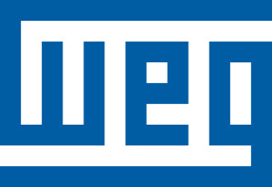
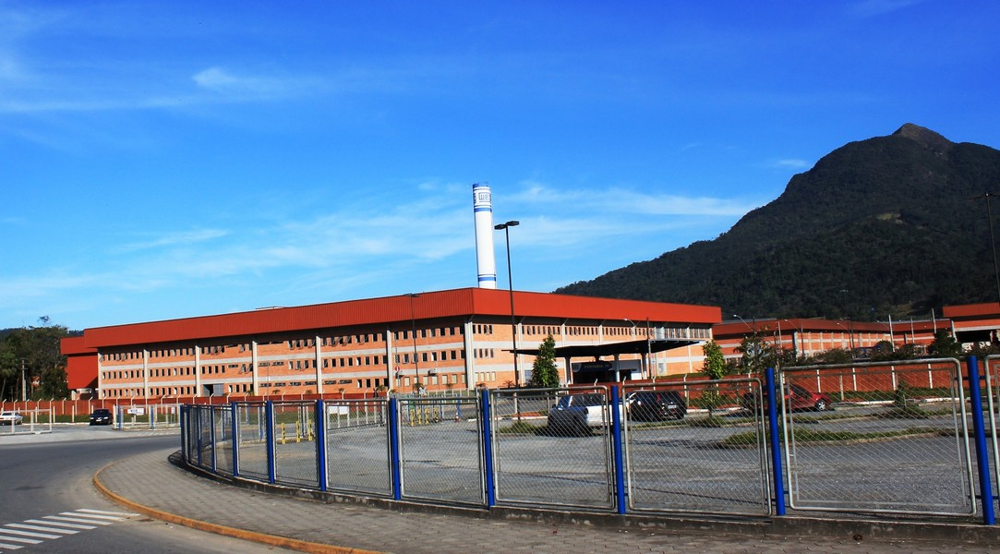
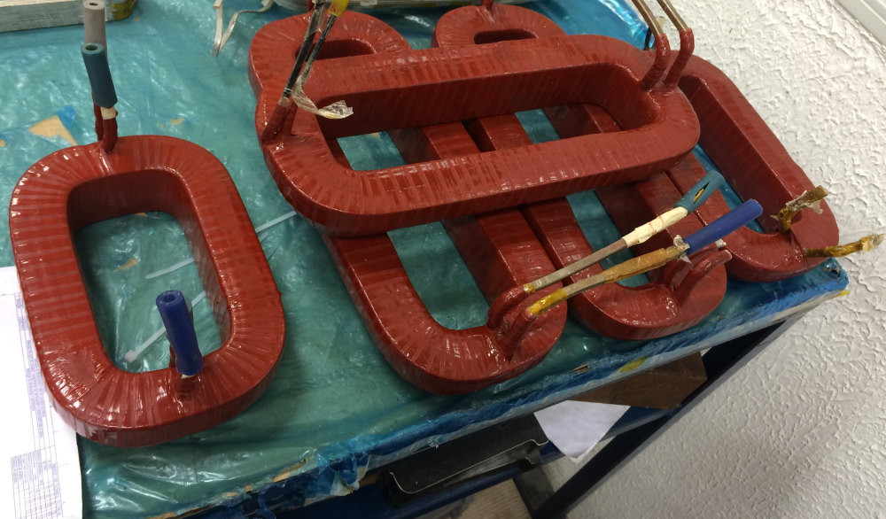
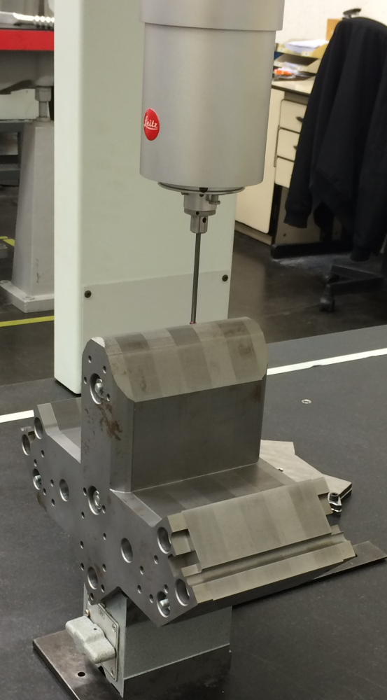

Fabricação do Protótipo 
Os ímãs eletromagnéticos do Sirius foram construídos em parceria com a WEG, uma empresa brasileira sediada em Jaraguá do Sul (SC).
Os projetos mecânicos feitos no LNLS foram enviados para a WEG para a construção de protótipos dos ímãs.
Sede da WEG em Jaraguá do Sul.

Núcleo de um quadrupolo.

Bobinas de um quadrupolo.
Componentes do Ímãs
Testes Mecânicos e Elétricos 
Medição de um dos polos de um quadrupolo.
A WEG também realiza testes mecânicos em todos os componentes fabricados e testes elétricos nas bobinas dos ímãs.